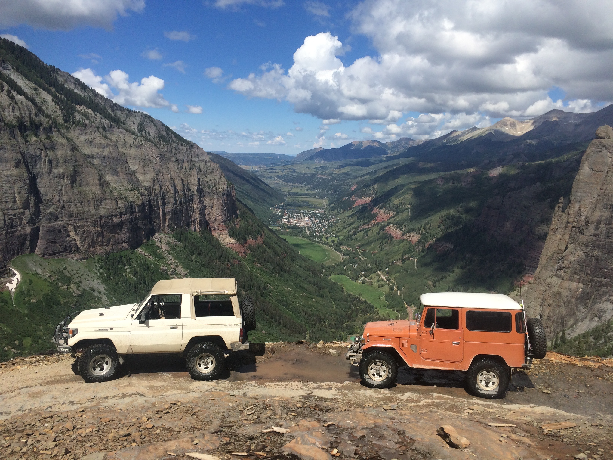
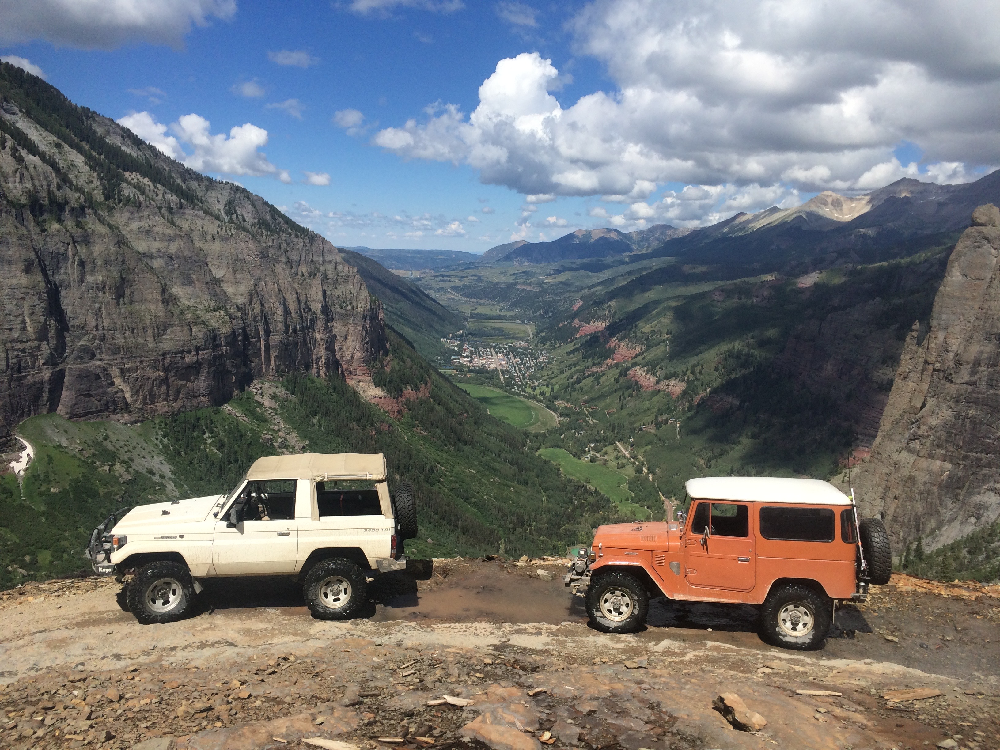
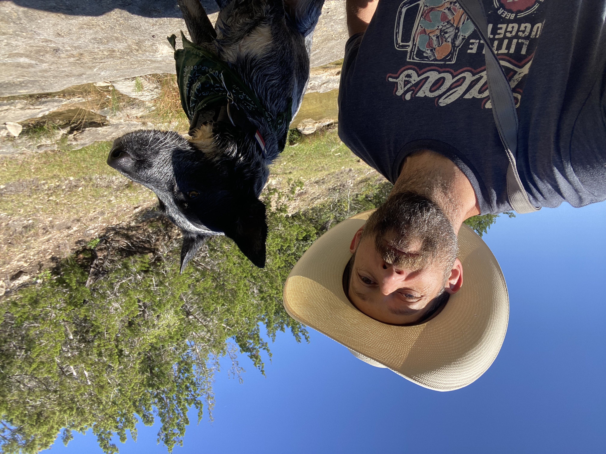
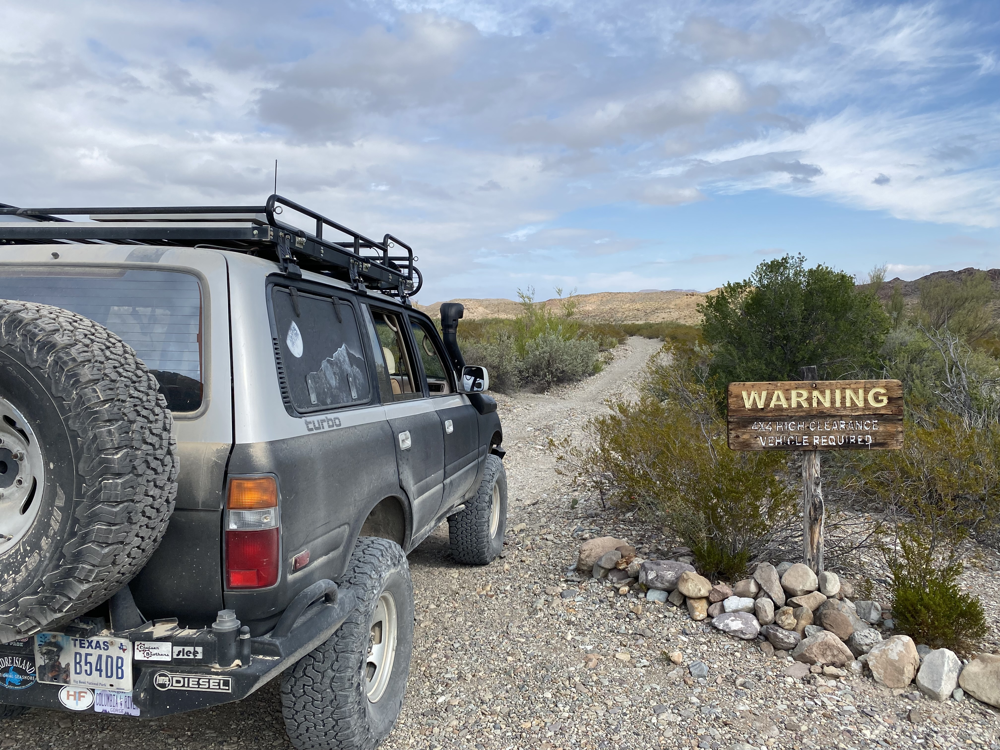
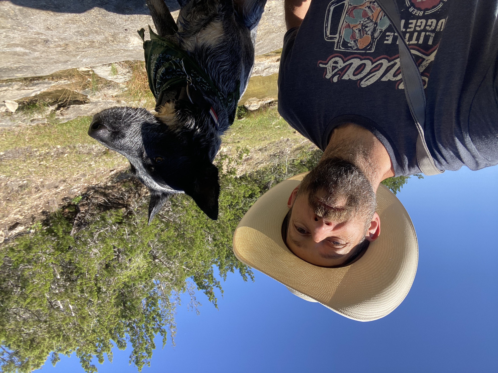
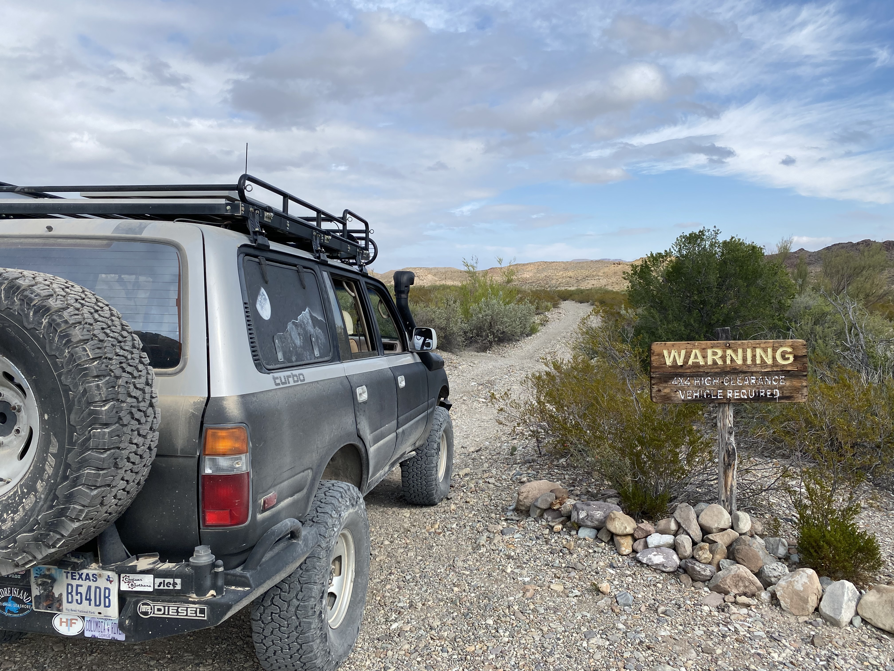

Projects

About
 

 




I consider myself an outdoorman with a goal of going places that most people wouldn't think of going.
Whether I am driving or hiking I love to push the limits of my skills.
As a hobby I have taught myself to build 4WD trucks. After spending my early years buiding Jeeps I
have
moved
on to be specialized in all things Toyota Land Cruiser. In my opinion it covers all requirements of
offroad travel.
Recently I have been joined on my adventures with my dog "Slippery Pete" . He's
an
Australian Cattle Dog who shares the same love for the outdoors. If you have a ball or frisbee he
will be your best friend.
When not building and driving 4WDs I have enjoyed learning to farm.
Over
the last few years my family and I have raised all our own meat. Chicken, pork, and beef.
I am a
big
believer non stop learning. This mindset is fundamental to my work ethic. In every job I take
on I try to excel, either by finding a mentor for guidience or figuring out solutions for problems
on my own. I take pride in finding jobs others aren't willing to do and making them my own. Learning
to
be a developer is now the new chapter in my quest to never stop learning new skils.